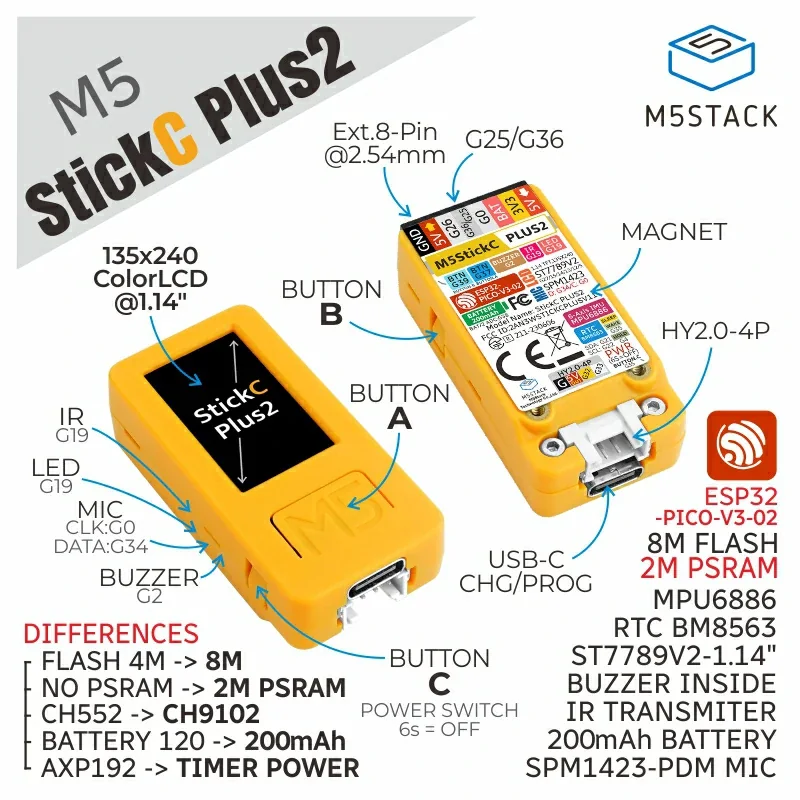

StickC Plus2
M5Stack · M5Stack StickC Plus2 – ESP32-PICO 1.14" TFT stick
StickC Plus2 is an 1.14" 135x240 TFT ESP32 display board by M5Stack based on the ESP32 with 8MB flash, 2MB Quad PSRAM.
Features, ports & interfaces
- SPI display
- 2 MB PSRAM – Quad
- 8 MB flash
- Wi-Fi 4 (802.11 b/g/n, 2.4 GHz) – version from the ESP32 datasheet
- Bluetooth 4.2 BR/EDR (Classic) + BLE – version from the ESP32 datasheet
- IR emitter
- USB-C
- Grove port: HY2.0-4P (I2C + I/O + UART)
- GPIO / IO port expansion
- Microphone: SPM1423 microphone
- Buzzer: Onboard buzzer
- RTC: BM8563
- IMU: MPU6886
- Buttons: 3x custom buttons
Specifications
| Parameter | Value | Source |
|---|---|---|
| Screen size | 1.14" | source |
| Resolution | 135x240 | source |
| Panel | TFT | source |
| Shape | Rectangular | |
| Display interface | SPI | source |
| Display driver | ST7789V2 | source |
| Touch | None | source |
| MCU / SoC | ESP32-PICO-V3-02 (dual-core, 240 MHz) | source |
| MCU family | ESP32 | source |
| CPU frequency | 240 MHz | source |
| Flash | 8MB | source |
| PSRAM | 2MB Quad | source |
| Wi-Fi | 2.4 GHz Wi-Fi | source |
| Bluetooth | Bluetooth (SoC radio; not listed separately in the vendor spec table) | source |
| USB | USB Type-C | source |
| SKU | K016-P2 | source |
| Category | M5Stack (all-in-one controllers) | |
| Buttons | 3x custom buttons | source |
| Buzzer | Onboard buzzer | source |
| Grove / HY2.0 port | HY2.0-4P (I2C + I/O + UART) | source |
| IMU | MPU6886 | source |
| IR | IR emitter | source |
| Microphone | SPM1423 microphone | source |
| RTC | BM8563 | source |
| Vendor | M5Stack |
Official links & documentation
Files
Offline copies are available on the interactive page.
- Sch_M5StickC_Plus2_v0.5.pdf – original